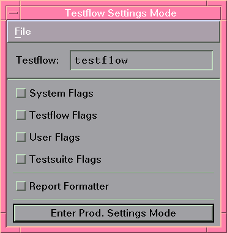

Accessing Testflow Settings
For a user with engineering status the Production Settings button is available in the Operation Control window (see Starting SmarTest with engineer mode). This button opens a dialog box that contains buttons to access all SmarTest flags (see the figure below).

Testflow settings include
Click any of the four toggle-buttons to get to the associated flag window (see following sections). The flags are interactive. You can change them during execution of the test and observe their effect.
Choose whichever method to view and edit the settings of the testflow, either from within the testflow or from the dedicated flag user interface, as discussed in this section. The effect is exactly the same.
See Using Production Settings for details on how to override flag settings using Production Settings.